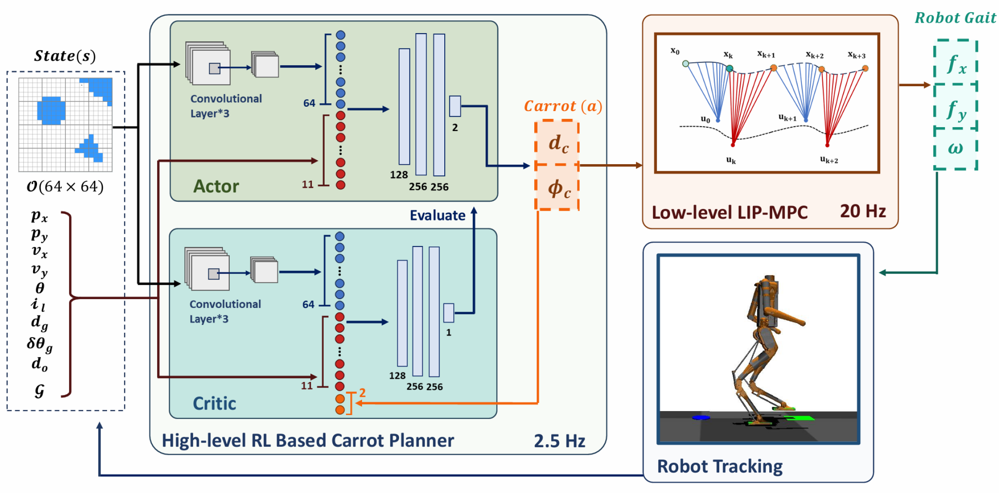

|
Sankalp (Sunny) Agrawal I'm an undergraduate student at The Ohio State University. I am intrigued by robot learning techniques which enable robots to learn and think like humans. At Ohio State, I am advised by Ayonga Hereid where I work on reinforcement learning for humanoid robots. I've also had the pleasure of collaborating with Erdem Bıyık through the USC SURE Program and Andrea Bajcsy through the CMU RISS Program. Please feel free to reach out! |

|
Research |

|
AnySafe: Adapting Latent Safety Filters at Runtime via Safety Constraint
Parameterization in the Latent Space
Sankalp Agrawal*, Junwon Seo*, Kensuke Nakamura, Ran Tian, Andrea Bajcsy In Submission, 2025TL;DR - We introduce constraint-parameterized latent safety filters, which adapt to user-specified visual constraints at runtime by conditioning on image encodings within a world model, enabling flexible and principled safe control without sacrificing task performance. |
|

|
Reinforcement Learning with Data Bootstrapping for Dynamic Subgoal Pursuit
in Humanoid Robot Navigation
Chengyang Peng, Zhihao Zhang, Shiting Gong, Sankalp Agrawal, Keith A. Redmill, Ayonga Hereid In Submission, 2025TL;DR - We present a hierarchical navigation framework combining RL-based subgoal selection, MPC gait planning, and data bootstrapping, which enables humanoid robots like Digit to navigate cluttered environments more reliably and adaptively than existing methods. |
|
Template from here. |